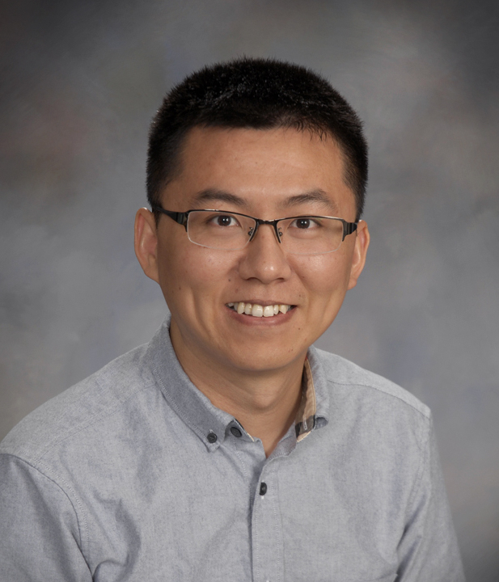

Dr. Cheng Zhu, P.E.
Associate Professor, Department of Civil and Environmental Engineering, Rowan University
- 2023-Present: Associate Professor, Department of Civil and Environmental Engineering, Rowan University
- 2017-2023: Assistant Professor, Department of Civil and Environmental Engineering, Rowan University
- 2016-2017: Postdoc in Bureau of Economic Geology, University of Texas at Austin
- 2012-2016: Ph.D. in Civil Engineering, Georgia Institute of Technology
- 2012-2014: M.S. in Civil Engineering, Georgia Institute of Technology
- 2009-2012: M.Eng. in Civil Engineering, Nanyang Technological University
- 2005-2009: B.Eng. in Civil Engineering, 1st Class Honor, Nanyang Technological University
Selected Honors and Awards
- Early Career Educator Award, United States Universities Council on Geotechnical Education and Research (USUCGER), 2026
- National High Value Research - AASHTO Honorable Mention Award in Supplemental Maintenance, Management and Preservation, 2025
- Researcher of the Year, ASCE New Jersey Section, 2022
- NSF I-Corps National Award, Rowan University, 2021
- Wall of Fame, Rowan University, 2020
- Frances R. Lax Faculty Development Award, Rowan University, 2018